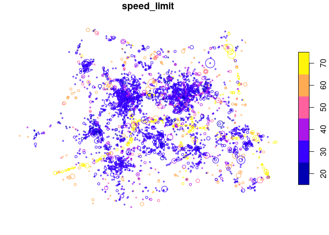
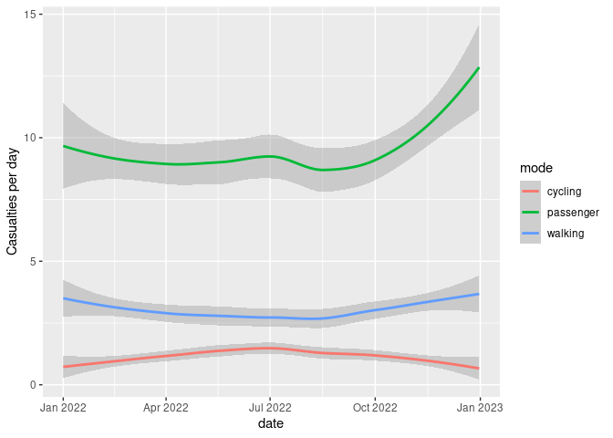
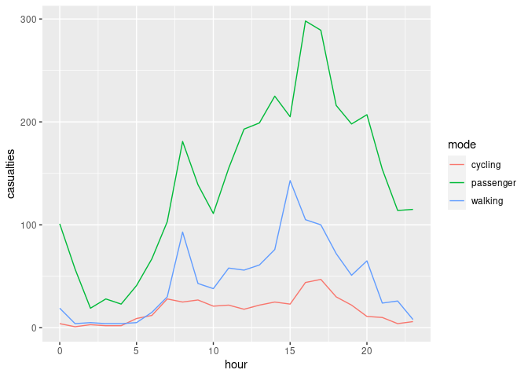

stats19 provides functions for downloading and formatting road crash data. Specifically, it enables access to the UK’s official road traffic casualty database, STATS19. (The name comes from the form used by the police to record car crashes and other incidents resulting in casualties on the roads.)
A full overview of STATS19 variables be found in a document provided by the UK’s Department for Transport (DfT).
The raw data is provided as a series of .csv files that contain integers and which are stored in dozens of .zip files. Finding, reading-in and formatting the data for research can be a time consuming process subject to human error. stats19 speeds up these vital but boring and error-prone stages of the research process with a single function: get_stats19(). By allowing public access to properly labelled road crash data, stats19 aims to make road safety research more reproducible and accessible.
For transparency and modularity, each stage can be undertaken separately, as documented in the stats19 vignette.
The package has now been peer reviewed and is stable, and has been published in the Journal of Open Source Software (Lovelace et al. 2019). Please tell people about the package, link to it and cite it if you use it in your work.
Installation
Install and load the latest version with:
remotes::install_github("ropensci/stats19")
library(stats19)
#> Data provided under OGL v3.0. Cite the source and link to:
#> www.nationalarchives.gov.uk/doc/open-government-licence/version/3/You can install the released version of stats19 from CRAN with:
install.packages("stats19")get_stats19()
get_stats19() requires year and type parameters, mirroring the provision of STATS19 data files, which are categorised by year (from 1979 onward) and type (with separate tables for crashes, casualties and vehicles, as outlined below). The following command, for example, gets crash data from 2022 (note: we follow the “crash not accident” campaign of RoadPeace in naming crashes, although the DfT refers to the relevant tables as ‘accidents’ data):
crashes = get_stats19(year = 2022, type = "collision")
#> Files identified: dft-road-casualty-statistics-collision-2022.csv
#> https://data.dft.gov.uk/road-accidents-safety-data/dft-road-casualty-statistics-collision-2022.csv
#> Data already exists in data_dir, not downloading
#> Reading in:
#> ~/data/stats19/dft-road-casualty-statistics-collision-2022.csv
#> Rows: 106004 Columns: 36
#> ── Column specification ────────────────────────────────────────────────────────
#> Delimiter: ","
#> chr (6): accident_index, accident_reference, date, local_authority_ons_dis...
#> dbl (29): accident_year, location_easting_osgr, location_northing_osgr, lon...
#> time (1): time
#>
#> ℹ Use `spec()` to retrieve the full column specification for this data.
#> ℹ Specify the column types or set `show_col_types = FALSE` to quiet this message.
#> date and time columns present, creating formatted datetime columnWhat just happened? For the year 2022 we read-in crash-level (type = "collision") data on all road crashes recorded by the police across Great Britain. The dataset contains 37 columns (variables) for 106,004 crashes. We were not asked to download the file (by default you are asked to confirm the file that will be downloaded). The contents of this dataset, and other datasets provided by stats19, are outlined below and described in more detail in the stats19 vignette.
We will see below how the function also works to get the corresponding casualty and vehicle datasets for 2022. The package also allows STATS19 files to be downloaded and read-in separately, allowing more control over what you download, and subsequently read-in, with read_collisions(), read_casualties() and read_vehicles(), as described in the vignette.
Data download
Data files can be downloaded without reading them in using the function dl_stats19(). If there are multiple matches, you will be asked to choose from a range of options. Providing just the year, for example, will result in the following options:
dl_stats19(year = 2022, data_dir = tempdir())Multiple matches. Which do you want to download?
1: dft-road-casualty-statistics-casualty-2022.csv
2: dft-road-casualty-statistics-vehicle-2022.csv
3: dft-road-casualty-statistics-collision-2022.csv
Selection:
Enter an item from the menu, or 0 to exitUsing the data
STATS19 data consists of 3 main tables:
- Accidents, the main table which contains information on the crash time, location and other variables (37 columns in total)
- Casualties, containing data on people hurt or killed in each crash (19 columns in total)
- Vehicles, containing data on vehicles involved in or causing each crash (28 columns in total)
The contents of each is outlined below.
Crash data
Crash data was downloaded and read-in using the function get_stats19(), as described above.
Some of the key variables in this dataset include:
key_column_names = grepl(pattern = "severity|speed|pedestrian|light_conditions", x = names(crashes))
crashes[key_column_names]
#> # A tibble: 106,004 × 5
#> accident_severity speed_limit pedestrian_crossing_hu…¹ pedestrian_crossing_…²
#> <chr> <dbl> <chr> <chr>
#> 1 Slight 30 None within 50 metres No physical crossing …
#> 2 Slight 50 None within 50 metres Pelican, puffin, touc…
#> 3 Slight 30 None within 50 metres No physical crossing …
#> 4 Slight 30 None within 50 metres No physical crossing …
#> 5 Slight 50 None within 50 metres No physical crossing …
#> 6 Serious 30 None within 50 metres No physical crossing …
#> 7 Slight 30 None within 50 metres No physical crossing …
#> 8 Slight 40 None within 50 metres No physical crossing …
#> 9 Slight 30 None within 50 metres Pedestrian phase at t…
#> 10 Serious 20 None within 50 metres Zebra
#> # ℹ 105,994 more rows
#> # ℹ abbreviated names: ¹pedestrian_crossing_human_control,
#> # ²pedestrian_crossing_physical_facilities
#> # ℹ 1 more variable: light_conditions <chr>For the full list of columns, run names(crashes) or see the vignette.
Casualties data
As with crashes, casualty data for 2022 can be downloaded, read-in and formatted as follows:
casualties = get_stats19(year = 2022, type = "casualty", ask = FALSE, format = TRUE)
#> Files identified: dft-road-casualty-statistics-casualty-2022.csv
#> https://data.dft.gov.uk/road-accidents-safety-data/dft-road-casualty-statistics-casualty-2022.csv
#> Data already exists in data_dir, not downloading
#> Rows: 135480 Columns: 19
#> ── Column specification ────────────────────────────────────────────────────────
#> Delimiter: ","
#> chr (3): accident_index, accident_reference, lsoa_of_casualty
#> dbl (16): accident_year, vehicle_reference, casualty_reference, casualty_cla...
#>
#> ℹ Use `spec()` to retrieve the full column specification for this data.
#> ℹ Specify the column types or set `show_col_types = FALSE` to quiet this message.
nrow(casualties)
#> [1] 135480
ncol(casualties)
#> [1] 19The results show that there were 135,480 casualties reported by the police in the STATS19 dataset in 2022, and 19 columns (variables). Values for a sample of these columns are shown below:
casualties[c(4, 5, 6, 14)]
#> # A tibble: 135,480 × 4
#> vehicle_reference casualty_reference casualty_class bus_or_coach_passenger
#> <dbl> <dbl> <chr> <chr>
#> 1 2 1 Driver or rider Not a bus or coach pass…
#> 2 1 1 Driver or rider Not a bus or coach pass…
#> 3 1 1 Driver or rider Not a bus or coach pass…
#> 4 1 1 Driver or rider Not a bus or coach pass…
#> 5 1 2 Passenger Not a bus or coach pass…
#> 6 1 1 Driver or rider Not a bus or coach pass…
#> 7 2 2 Driver or rider Not a bus or coach pass…
#> 8 3 3 Driver or rider Not a bus or coach pass…
#> 9 1 1 Driver or rider Not a bus or coach pass…
#> 10 1 2 Passenger Not a bus or coach pass…
#> # ℹ 135,470 more rowsThe full list of column names in the casualties dataset is:
names(casualties)
#> [1] "accident_index" "accident_year"
#> [3] "accident_reference" "vehicle_reference"
#> [5] "casualty_reference" "casualty_class"
#> [7] "sex_of_casualty" "age_of_casualty"
#> [9] "age_band_of_casualty" "casualty_severity"
#> [11] "pedestrian_location" "pedestrian_movement"
#> [13] "car_passenger" "bus_or_coach_passenger"
#> [15] "pedestrian_road_maintenance_worker" "casualty_type"
#> [17] "casualty_home_area_type" "casualty_imd_decile"
#> [19] "lsoa_of_casualty"Vehicles data
Data for vehicles involved in crashes in 2022 can be downloaded, read-in and formatted as follows:
vehicles = get_stats19(year = 2022, type = "vehicle", ask = FALSE, format = TRUE)
#> Files identified: dft-road-casualty-statistics-vehicle-2022.csv
#> https://data.dft.gov.uk/road-accidents-safety-data/dft-road-casualty-statistics-vehicle-2022.csv
#> Data already exists in data_dir, not downloading
#> Rows: 193545 Columns: 28
#> ── Column specification ────────────────────────────────────────────────────────
#> Delimiter: ","
#> chr (4): accident_index, accident_reference, generic_make_model, lsoa_of_dr...
#> dbl (24): accident_year, vehicle_reference, vehicle_type, towing_and_articul...
#>
#> ℹ Use `spec()` to retrieve the full column specification for this data.
#> ℹ Specify the column types or set `show_col_types = FALSE` to quiet this message.
nrow(vehicles)
#> [1] 193545
ncol(vehicles)
#> [1] 28The results show that there were 193,545 vehicles involved in crashes reported by the police in the STATS19 dataset in 2022, with 28 columns (variables). Values for a sample of these columns are shown below:
vehicles[c(3, 14:16)]
#> # A tibble: 193,545 × 4
#> accident_reference vehicle_leaving_carriageway hit_object_off_carriageway
#> <chr> <chr> <chr>
#> 1 010352073 Did not leave carriageway None
#> 2 010352073 Did not leave carriageway None
#> 3 010352573 Nearside Road sign or traffic signal
#> 4 010352573 Did not leave carriageway None
#> 5 010352575 Did not leave carriageway None
#> 6 010352575 Did not leave carriageway None
#> 7 010352578 Did not leave carriageway None
#> 8 010352578 Did not leave carriageway None
#> 9 010352580 Did not leave carriageway None
#> 10 010352580 Did not leave carriageway None
#> # ℹ 193,535 more rows
#> # ℹ 1 more variable: first_point_of_impact <chr>The full list of column names in the vehicles dataset is:
names(vehicles)
#> [1] "accident_index" "accident_year"
#> [3] "accident_reference" "vehicle_reference"
#> [5] "vehicle_type" "towing_and_articulation"
#> [7] "vehicle_manoeuvre" "vehicle_direction_from"
#> [9] "vehicle_direction_to" "vehicle_location_restricted_lane"
#> [11] "junction_location" "skidding_and_overturning"
#> [13] "hit_object_in_carriageway" "vehicle_leaving_carriageway"
#> [15] "hit_object_off_carriageway" "first_point_of_impact"
#> [17] "vehicle_left_hand_drive" "journey_purpose_of_driver"
#> [19] "sex_of_driver" "age_of_driver"
#> [21] "age_band_of_driver" "engine_capacity_cc"
#> [23] "propulsion_code" "age_of_vehicle"
#> [25] "generic_make_model" "driver_imd_decile"
#> [27] "driver_home_area_type" "lsoa_of_driver"Creating geographic crash data
An important feature of STATS19 data is that the collision table contains geographic coordinates. These are provided at ~10m resolution in the UK’s official coordinate reference system (the Ordnance Survey National Grid, EPSG code 27700). stats19 converts the non-geographic tables created by format_collisions() into the geographic data form of the sf package with the function format_sf() as follows:
crashes_sf = format_sf(crashes)
#> 22 rows removed with no coordinatesThe note arises because NA values are not permitted in sf coordinates, and so rows containing no coordinates are automatically removed. Having the data in a standard geographic form allows various geographic operations to be performed on it. The following code chunk, for example, returns all crashes within the boundary of West Yorkshire (which is contained in the object police_boundaries, an sf data frame containing all police jurisdictions in England and Wales).
library(sf)
#> Linking to GEOS 3.11.1, GDAL 3.6.4, PROJ 9.1.1; sf_use_s2() is TRUE
library(dplyr)
#>
#> Attaching package: 'dplyr'
#> The following objects are masked from 'package:stats':
#>
#> filter, lag
#> The following objects are masked from 'package:base':
#>
#> intersect, setdiff, setequal, union
wy = filter(police_boundaries, pfa16nm == "West Yorkshire")
#> old-style crs object detected; please recreate object with a recent sf::st_crs()
crashes_wy = crashes_sf[wy, ]
nrow(crashes_sf)
#> [1] 105982
nrow(crashes_wy)
#> [1] 4400This subsetting has selected the 4,400 crashes which occurred within West Yorkshire in 2022.
Joining tables
The three main tables we have just read-in can be joined by shared key variables. This is demonstrated in the code chunk below, which subsets all casualties that took place in Leeds, and counts the number of casualties by severity for each crash:
sel = casualties$accident_index %in% crashes_wy$accident_index
casualties_wy = casualties[sel, ]
names(casualties_wy)
#> [1] "accident_index" "accident_year"
#> [3] "accident_reference" "vehicle_reference"
#> [5] "casualty_reference" "casualty_class"
#> [7] "sex_of_casualty" "age_of_casualty"
#> [9] "age_band_of_casualty" "casualty_severity"
#> [11] "pedestrian_location" "pedestrian_movement"
#> [13] "car_passenger" "bus_or_coach_passenger"
#> [15] "pedestrian_road_maintenance_worker" "casualty_type"
#> [17] "casualty_home_area_type" "casualty_imd_decile"
#> [19] "lsoa_of_casualty"
cas_types = casualties_wy %>%
select(accident_index, casualty_type) %>%
mutate(n = 1) %>%
group_by(accident_index, casualty_type) %>%
summarise(n = sum(n)) %>%
tidyr::spread(casualty_type, n, fill = 0)
cas_types$Total = rowSums(cas_types[-1])
cj = left_join(crashes_wy, cas_types, by = "accident_index")What just happened? We found the subset of casualties that took place in West Yorkshire with reference to the accident_index variable. Then we used functions from the tidyverse package dplyr (and spread() from tidyr) to create a dataset with a column for each casualty type. We then joined the updated casualty data onto the crashes_wy dataset. The result is a spatial (sf) data frame of crashes in Leeds, with columns counting how many road users of different types were hurt. The original and joined data look like this:
crashes_wy %>%
select(accident_index, accident_severity) %>%
st_drop_geometry()
#> # A tibble: 4,400 × 2
#> accident_index accident_severity
#> * <chr> <chr>
#> 1 2022121205585 Slight
#> 2 2022131127664 Slight
#> 3 2022131127681 Serious
#> 4 2022131127764 Serious
#> 5 2022131127766 Slight
#> 6 2022131127829 Slight
#> 7 2022131127841 Serious
#> 8 2022131127847 Slight
#> 9 2022131127861 Slight
#> 10 2022131127881 Slight
#> # ℹ 4,390 more rows
cas_types[1:2, c("accident_index", "Cyclist")]
#> # A tibble: 2 × 2
#> # Groups: accident_index [2]
#> accident_index Cyclist
#> <chr> <dbl>
#> 1 2022121205585 0
#> 2 2022131127664 0
cj[1:2, c(1, 5, 34)] %>% st_drop_geometry()
#> # A tibble: 2 × 3
#> accident_index latitude lsoa_of_accident_location
#> * <chr> <dbl> <chr>
#> 1 2022121205585 53.8 E01027904
#> 2 2022131127664 53.7 E01011132Mapping crashes
The join operation added a geometry column to the casualty data, enabling it to be mapped (for more advanced maps, see the vignette):
cex = cj$Total / 3
plot(cj["speed_limit"], cex = cex)
The spatial distribution of crashes in West Yorkshire clearly relates to the region’s geography. Crashes tend to happen on busy Motorway roads (with a high speed limit, of 70 miles per hour, as shown in the map above) and city centres, of Leeds and Bradford in particular. The severity and number of people hurt (proportional to circle width in the map above) in crashes is related to the speed limit.
STATS19 data can be used as the basis of road safety research. The map below, for example, shows the results of an academic paper on the social, spatial and temporal distribution of bike crashes in West Yorkshire, which estimated the number of crashes per billion km cycled based on commuter cycling as a proxy for cycling levels overall (more sophisticated measures of cycling levels are now possible thanks to new data sources) (Lovelace, Roberts, and Kellar 2016):

Time series analysis
We can also explore seasonal trends in crashes by aggregating crashes by day of the year:
library(ggplot2)
head(cj$date)
#> [1] "2022-08-03" "2022-01-01" "2022-01-01" "2022-01-01" "2022-01-01"
#> [6] "2022-01-01"
class(cj$date)
#> [1] "Date"
crashes_dates = cj %>%
st_set_geometry(NULL) %>%
group_by(date) %>%
summarise(
walking = sum(Pedestrian),
cycling = sum(Cyclist),
passenger = sum(`Car occupant`)
) %>%
tidyr::gather(mode, casualties, -date)
ggplot(crashes_dates, aes(date, casualties)) +
geom_smooth(aes(colour = mode), method = "loess") +
ylab("Casualties per day")
#> `geom_smooth()` using formula = 'y ~ x'
Different types of crashes also tend to happen at different times of day. This is illustrated in the plot below, which shows the times of day when people who were travelling by different modes were most commonly injured.
library(stringr)
crash_times = cj %>%
st_set_geometry(NULL) %>%
group_by(hour = as.numeric(str_sub(time, 1, 2))) %>%
summarise(
walking = sum(Pedestrian),
cycling = sum(Cyclist),
passenger = sum(`Car occupant`)
) %>%
tidyr::gather(mode, casualties, -hour)
ggplot(crash_times, aes(hour, casualties)) +
geom_line(aes(colour = mode))
Note that cycling manifests distinct morning and afternoon peaks (see Lovelace, Roberts, and Kellar 2016 for more on this).
Usage in research and policy contexts
Examples of how the package can been used for policy making include:
- Use of the package in a web app created by the library service of the UK Parliament. See commonslibrary.parliament.uk, screenshots of which from December 2019 are shown below, for details.

Use of methods taught in the stats19-training vignette by road safety analysts at Essex Highways and the Safer Essex Roads Partnership (SERP) to inform the deployment of proactive front-line police enforcement in the region (credit: Will Cubbin).
Mention of road crash data analysis based on the package in an article on urban SUVs. The question of how vehicle size and type relates to road safety is an important area of future research. A starting point for researching this topic can be found in the
stats19-vehiclesvignette, representing a possible next step in terms of how the data can be used.
Next steps
There is much important research that needs to be done to help make the transport systems in many cities safer. Even if you’re not working with UK data, we hope that the data provided by stats19 data can help safety researchers develop new methods to better understand the reasons why people are needlessly hurt and killed on the roads.
The next step is to gain a deeper understanding of stats19 and the data it provides. Then it’s time to pose interesting research questions, some of which could provide an evidence-base in support policies that save lives. For more on these next steps, see the package’s introductory vignette.